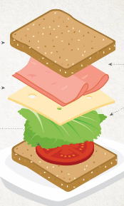

Home
Sandwich
Now, a lot of you would say "Sandwich? Really?" but for those non believers I present thee the SandwichTM.
You have not eaten a sandwich until you tried this one.
Ingredients
- Bread
Chose that good bread, that breat that makes you remember another time when you ate bread this good.
- Cheese
You can't go wrong with the sliced cheese, pick a good brand that you like. My favorite is the one with turkey ham.
- Salami / Ham
You can't go wrong with ham ( unless its really bad ham ).
- Tomatos
Some chose to slice them THICC but I prefer them thinly sliced as to not mess up the "feng shui" of the sandwich.
- Cucumber
I am a bit late on the cucumber hype train, but recently I started eating them even just sliced and with a bit of salt, magnificent snack.
Preparation step by step
- Slice of bread comes first
- The rest of the ingredients
- Bread 2 (optional)
- There is no step 4 (maybe toast it?) enjoy.

(Couldn't find image with cucumber, rm lettuce then touch cucumber)